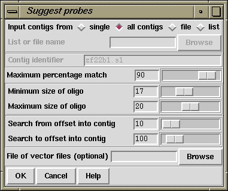
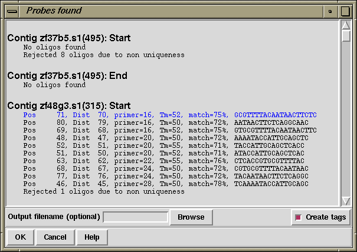

The suggest probes function (which is available from the gap4 Experiments menu) looks for oligos at the end of each contig suitable for use with an oligo probing strategy invented by Jonathan Flint. Flint,J., Sims,M., Clark,K., Staden,R. and Thomas,K. An oligo-screening strategy to fill gaps found during shotgun sequencing projects. DNA Sequence 8, 241-245. The probing strategy is used part way through a sequencing project to find clones which should help to extend contigs. The gap4 function described here is used to select oligos from readings that are near the ends of the current contigs. These oligos are synthesised and then used to probe a pool of sequencing clones. Those which it selects are then sequenced in the hope that they will lengthen the contigs.

The dialogue contains the usual methods of selecting the set of contigs to operate on. For each end of the selected contigs, oligos are chosen using the OSP Hillier, L., and Green, P. (1991). "OSP: an oligonucleotide selection program," PCR Methods and Applications, 1:124-128. selection criteria which is dependent on the maximum and minimum size of oligos specified. The "search from" and "search to" parameters control the area of consensus sequence in which to search for oligos. For example, if they are set to 10 and 100 respectively the a section of consensus sequence used is 90 bases long and starts 10 bases from the end of the contig.
Once an oligo is found it is screened against all the existing consensus sequence. An oligo is rejected if it matches with a score greater than or equal to the "maximum percentage match". If a file of vector filenames has been specified then the oligos are also screened against the vector sequences.
Typical output for a single contig follows. The output shows all oligos that
have passed the screening process. The information listed includes the
distance of this oligo from the end of the contig (Dist ??), the score
returned from the OSP selection (primer=??), the melting temperature
(Tm=??), the best percentage match found (match=??%) and the
oligo sequence.
Contig zf37b5.s1(495): Start
Rejected 8 oligos due to non uniqueness
Contig zf37b5.s1(495): End
No oligos found
Contig zf48g3.s1(315): Start
Pos 71, Dist 70, primer=16, Tm=52, match=75%, GCGTTTTACAATAACTTCTC
Pos 80, Dist 79, primer=16, Tm=50, match=72%, AATAACTTCTCAGGCAAC
Pos 69, Dist 68, primer=16, Tm=52, match=75%, GTGCGTTTTACAATAACTTC
Pos 48, Dist 47, primer=20, Tm=50, match=72%, AAAATACCATTGCAGCTC
Pos 52, Dist 51, primer=20, Tm=55, match=71%, TACCATTGCAGCTCACC
Pos 51, Dist 50, primer=20, Tm=52, match=71%, ATACCATTGCAGCTCAC
Pos 63, Dist 62, primer=22, Tm=55, match=76%, CTCACCGTGCGTTTTAC
Pos 68, Dist 67, primer=24, Tm=50, match=72%, CGTGCGTTTTACAATAAC
Pos 77, Dist 76, primer=24, Tm=50, match=72%, TACAATAACTTCTCAGGC
Pos 46, Dist 45, primer=28, Tm=50, match=78%, TCAAAATACCATTGCAGC
Rejected 1 oligo due to non uniqueness
This output is sent to both the Output Window and additionally to a suggest probes output window. This latter window (shown below) allows selection of oligos from those available for each contig by clicking the left mouse button on a line of the output. The selected oligos are shown in blue. By default the first in each set is automatically selected.

The selected oligos can then be written to a file by filling in the "output filename" and will have OLIG tags created for them when the "Create tags" checkbutton is selected. This output window vanishes once OK is pressed, but the text in the main Output Window is left intact.